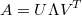
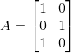
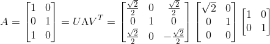

定义
我们先来看下奇异值分解的公式，对于任意矩阵A：

其中U和V都是单位正交矩阵，Λ是对角矩阵。
公式从何来？
我们先来看下矩阵有何线性意义。从第一章到现在已经写了近20篇有关矩阵的文章了，但是矩阵有没有直观点的表示形式呢？答案是有的，以下摘录了We Recommend a Singular Value Decomposition的内容。
我们先来看一个矩阵M:

那这个矩阵对平面上的一个点(x,y)的影响是什么？在这之前，先来解释下向量(a,b)的定义，我们通常说的(a,b)是以(1,0)和(0,1)两个向量作为坐标的基底，如果我把基底变成(1,0),(0,3)，那么(a,b)就不再是代表原来那个点了，而是原先坐标系的(a,3b)，不过在转换后的坐标系上仍然写成(a,b)。理解了这点后，我们再来往下看：

可以明显看出y不变，x被拉长了3倍。我们再来更具体的感受下这个矩阵的作用，假定原来坐标系里有一个1*1的正方体，经过这个矩阵的作用后，其变换成：
通过这个例子，我们些许能感受到正方形的变形，是由于基底(x,y)的变形（x向量的变形）。比如对于转换前的正方形，其顶点位置为(1,1)，而转换后的顶点位置仍为(1,1)：
变化的只是基底。我们再来看另一个矩阵，同样命名为M：
如果将其作用到刚刚的坐标系中，会有怎么样的变化：
感觉没法怎么描述这个变化，因为基底x和y都发生了旋转拉伸。但是我们先将原来的坐标系逆时针旋转45度后，再经过矩阵M的变换，其结果为：
这时会惊喜发现这个变换跟刚刚那个一致，也是x方向拉长3倍，y方向不变。这时问题来了，仔细观察上面两个矩阵的变换能发现一个共同的特征，转换前后其基底都是正交的，那么对于任意矩阵M，是否总能存在一个本来正交的基底，转换后的基底也是正交的？
我们再来看一个例子：

仍然放到一个普通的正交基底上时，可看到转换后的基底并不正交：
那我们先将原来的正交基底逆时针转30度，可得：
可以感觉基底逐渐朝正交的方向发展~我们继续选择原来的基底，这次逆时针转60度：
几乎正交了！最后，经过实验表明，正交需要的角度是58.28度。
有了上面三个例子做铺垫，下面我们直接从基底出发来分析这个问题，假定转换前基底正交：
我们将转换后的基底单位化后，用u表示，有：
那么就有如下公式：
对于以v为基底的坐标轴，我们在中随意找个点X，其在v1方向的长度是v1·X(v1与X点乘)，在v2方向的长度是v2·X(v2与X点乘)，那么X可表示成如下形式：
等号左右各乘以M可得：
因为v1·X和v2·X是常数而不是矩阵，所以可以移到后面，而且点乘可以表示成转置乘，所以有：
等号左右再右乘X的逆，可得：
转换成矩阵的形式，就是：
这就得到了SVD公式，那怎么证明u1，u2正交？我们可以通过证明(λ1u1)·λ2u2=0来证明其正交：
这时当v2是(M转置M)的特征向量时，公式可以继续推导下去：
因此可以看出u1，u2也是正交的当v2为(M转置M)的特征向量。因为(M转置M)是对称矩阵，那特征向量可以相互正交(推导可参考对称矩阵的正交分解)，那么v1也是(M转置M)的特征向量。
综上，对于任意矩阵A，找到(A转置A)的一组正交单位特征向量，可以通过矩阵A转换得到另外一组正交单位特征向量。
怎么求SVD
基于刚刚所说，我们也可以直接结合公式得到：
因为U是正交矩阵，所以U转置U=单位矩阵，有：
因为Λ是对角矩阵，所以其转置乘本身为其平方：
结合之前学过的对称矩阵的正交分解，可以很快求出V和Λ，这也可以说明上部分最后提到的限制条件——v是(A转置A)的一组正交单位特征向量。求出V和Λ后就可以求出U，求U有两种方法：
1. 跟求V一样，不过这次右乘A的转置：
可见U是(AA转置)的特征向量。同时和V共享同个特征值(Λ^2)——AB的特征值与BA的特征值一致：
2. 由于Λ大多是对角矩阵，其逆就是对角元素的倒数的集合，所以直接通过公式计算就可以得出：

不过这方法并不是总能见效，如果Λ中对角线上有零元素出现的话，只能利用单位正交矩阵与格拉姆-施密特正交化来补充剩余的元素。
求SVD的例子
先来个简单的例子，有一矩阵A：

首先算A转置A的值：
接下去算出其特征值和单位化后的特征向量：
这时就知道Λ和V的值了，可以得出：
接下来算U，我们采用第一种方法，先算出(AA转置)的值，后再求其特征向量：
接下去算出其特征值和单位化后的特征向量，因为特征值与(A转置A一致)，所以可以推出其特征值为：
单位化后的特征向量为：
所以可以得知其U为：
最后整合公式，得：

简单例子举完，下面我会举个复杂的例子，其参考了奇異值分解 (SVD)的一个例子： 已知一个矩阵A：
首先求出(AA转置)的值：
接着可以求出其特征值和相对应的特征向量：
可以得到其Λ和V的值为：
接着我们利用方法二来求U，因为λ只有三个不为0的数，根据：
其中j=1,2,3.我们可以求出三组U的列向量:
我们接着可以利用利用格拉姆-施密特正交化来补充剩余的列向量。因为A为4*5的矩阵，又Λ的大小为4*5，所以U需要4个列向量，所以需要补充一个列向量。
我们首先可以随机初始化一个4*1的列向量，比如都设为1，然后利用公式正交化得到最终结果：
最终凑齐了4组列向量，我们得到了U：
整合公式得：
这节SVD基础篇就讲到这里，下一节讲下SVD的应用篇。